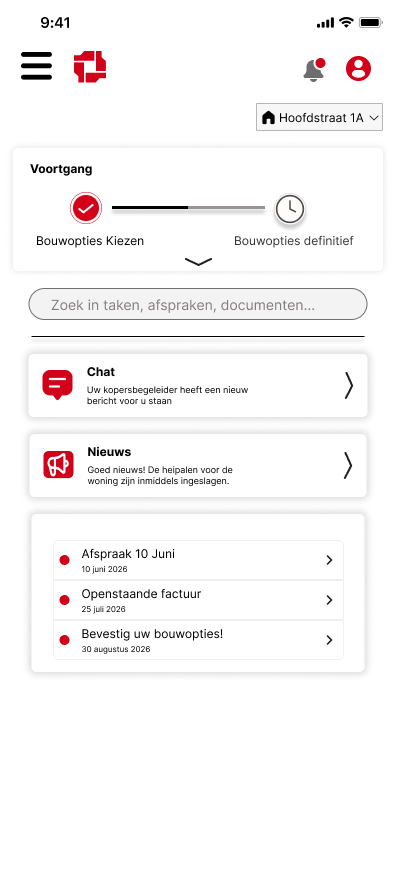

Projectoverzicht
Van Wijnen

Voor het bedrijfsproject werkte ik met mijn team aan een opdracht voor Van Wijnen. De opdracht was om het Mijn-Woning-Portaal uit te breiden, zodat kopers het bouwproces van hun nieuwe woning duidelijker kunnen volgen.
Het bestaande proces was verdeeld over meerdere systemen. Daardoor misten kopers overzicht, was communicatie lastig terug te vinden en werkte de ervaring minder goed op mobiel. Ons doel was een gebruiksvriendelijk, mobile-first ontwerp te maken waarin de klant stap voor stap wordt meegenomen van aankoop tot oplevering.
Wat moesten we doen?
- Onderzoeken wat kopers en kopers-begeleiders nodig hebben tijdens het bouwproces.
- Een duidelijke klantreis ontwerpen waarin voortgang, mijlpalen en updates zichtbaar zijn.
- Schermen maken voor functies zoals opties kiezen, berichten, documenten en financieel overzicht.
- Een prototype opleveren dat aansluit op de huisstijl en bestaande omgeving van Van Wijnen.
Wat hebben we gedaan?
- Interviews gehouden met kopers en kopers-begeleiders om knelpunten en wensen op te halen.
- Een designbrief gemaakt met persona's, customer journeys, requirements en een benchmarkanalyse.
- Low-fidelity concepten uitgewerkt en besproken met de product owner.
- Het ontwerp doorontwikkeld naar een mid- en high-fidelity Figma-prototype voor kopers.